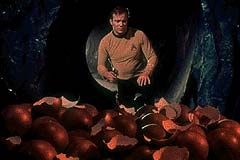
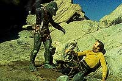

|
por
Lia Matos Viegas
A Srie Clssica teve
excelentes episdios. Por trs deles, tivemos pessoas como Gene
Roddenberry, Bob Justman e outros nomes, que compunham uma grande
equipe de produo. Entre esses nomes, um dos grandes foi Gene
Coon.
Criado em Nebraska, atuou durante quatro anos no Japo e na China
servindo como fuzileiro dos Estados Unidos aps recusar dispensa
desse servio. Depois, foi para Los Angeles, onde trabalhou como
escritor feelancer, at conseguir trabalho em programas para
televiso.
Nesse meio tempo foi que conheceu Jackie, seu nico grande amor e
com quem no se casou por ser tmido: ela acreditava que o amor
que ela sentia por ele no era correspondido (j que ele no
demonstrava seus sentimentos) e comeou a sair com outra pessoa,
com quem se casou. Ele tambm saiu com outra mulher e casou-se
com ela tambm. Quis o destino, anos depois reencontrar os dois
quando Jackie estava se divorciando. Resolveram que passariam o
resto da vida juntos --foi quando Coon se divorciou...
Entre suas qualidades, tinha a de conseguir embutir nos programas
em que trabalhava um adorvel senso de humor: quem no se
divertia vendo as brigas entre McCoy e Spock? Essa e outras
entradas engraadas --mas no absurdas-- foram, por todo o tempo
em que Coon foi produtor da Clssica, em grande parte,
inseridas por ele.
 Autor
de episdios como "The Devil in the Dark" --o
meu favorito, diga-se-- "Arena", "Errand
of Mercy", entre outros, Gene tinha uma capacidade de
captar a histria: segundo sua prpria esposa, Jackie, ele
conseguia dormir sem saber como continuar uma histria e acordar
trabalhando nela, feito louco, e ficaria l por horas. Quando
questionado sobre por que escrevia assim, ele simplesmente
respondia: "Tenho que escrever assim. Tenho muita coisa na
cabea que no consigo colocar na mquina com a rapidez necessria".
 Outra
qualidade do autor era encontrar nas coisas banais um grande
roteiro: foi como escreveu "The Devil in the Dark"
- Janos Prohaska, criador de diversos "monstros" de
Hollywood, como o Mugatu ("A Private Little War")
ou Yarnek ("The Savage Curtain"), apareceu nos
estdios com uma bolha de borracha estranha e fez de tudo para
mostrar para que ela servia: jogou um frango abatido no meio dessa
"bolha", subiu em sua criao e comeou a sacudir-se
em cima dela, tentando passar a ela uma sensao de vida. Em
seguida, arrasta um pouco sua criatura e aparece um esqueleto de
frango. Esse monstrinho comedor de frango virou o monstro comedor
de mineradores e heri do episdio.
Entre outras contribuies de Coon para Jornada nas Estrelas
esto os Klingons, o Tratado de Paz de Orgnia e a Primeira
Diretriz --ao contrrio do que muitos pensam, no foi
Roddenberry que criou tudo isso.
Mas, como nem tudo so flores na vida, a dele no foi diferente:
por motivos desconhecidos do pblico e mesmo dos envolvidos com a
srie, Gene saiu do programa durante a segunda temporada. Segundo
boatos, foi por intrigas com o outro Gene, mas no a confirmao
real disso. Alguns anos depois, ele morreria de cncer.
Ao final, Gene Coon foi uma grande figura em Jornada nas
Estrelas, apesar de no ser muito considerado por seu
trabalho. Todavia, aquele homem com jeito de banqueiro mal --e
que, na verdade, estava mais para gnio-- foi quem fez a srie
decolar. A ele, nossa homenagem...
|